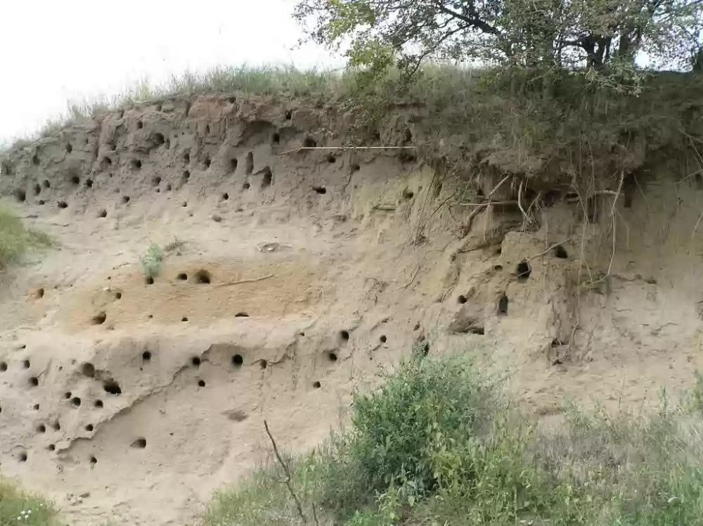

SRBIJA
Deliblatska peščara, jedinstvena u Evropi, nalazi se u jugoistočnom delu Vojvodine, u južnom Banatu. Ova prostrana oblast površine od oko 300 km2,
čije su glavne peščane mase elipsoidnog oblika okružene plodnim lesnim poljoprivrdnim površinama, proteže se između Dunava i padina Karpata.
Ovaj spomenik istorije prirode Panonske nizije, jedno je od retkih pribežišta za mnoge specifične vrste flore i faune, koje u evropskim i svetskim
razmerama predstavljaju prirodne retkosti. Peščara predstavlja geomorfološki i ekološko biogeografski fenomen ne samo Panonske nizije, već i čitave
Evrope, kao i značajan genetski resurs naše Planete.
Deliblatska peščara je ostrvo stepe i šumo-stepe, koje odlikuje izvorni mozaik travnih, žbunastih i šumskih staništa. Bogatstvo flore ovog područja se
ogleda u postojanju oko 900 vrsta viših biljaka, od kojih su mnoge relikti i rariteti, kao i vrste koje su u svom rasprostranjenju ograničene na
Panonsku niziju. Jedino se ovde, u odnosu na čitav prostor Srbije nalaze: banatski božur, stepski božur, pančićev pelen, šerpet i kockavica Degenova.
Svoje stanište ovde je našlo i 20 vrsta orhideja.

Zbog prisustva velikog broja vrsta ptica, od kojih su mnoge retke i ugrožene, ovo područje je uvršćeno u najznačajnija staništa ptica u Evropi –
IBA područje. Iz grupe grabljivica, koje su najugroženije ptice, zastupljene su vrste kao što su: banatski soko, orao krstaš i orao kliktaš. Njihovo
pojavljivanje uslovljeno je pašnjačkim površinama i prisustvom tekunice, koja predstavlja osnov njihove ishrane. Od stanovnika životinjskog carstva
peščare izdvajaju se vuk, jelen, srna i divlja svinja.
Prirodne karakteristike i jedinstvenost ovog kraja čine ga pogodnim za rekreaciju, lov i ribolov, nautički turizam, a pre svega ekološki turuzam. U
cilju zaštite ovog područja, Deliblatska peščara je proglašena za Specijalni rezervat prirode.